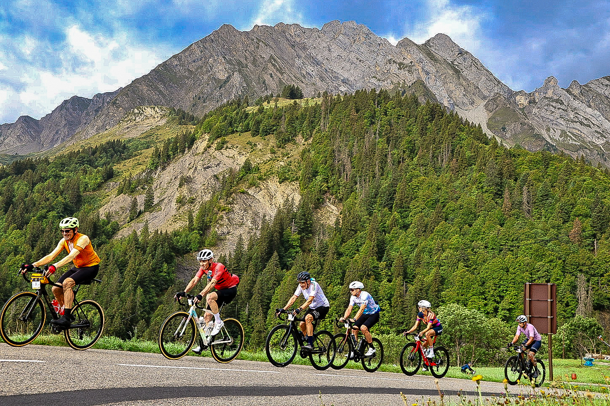
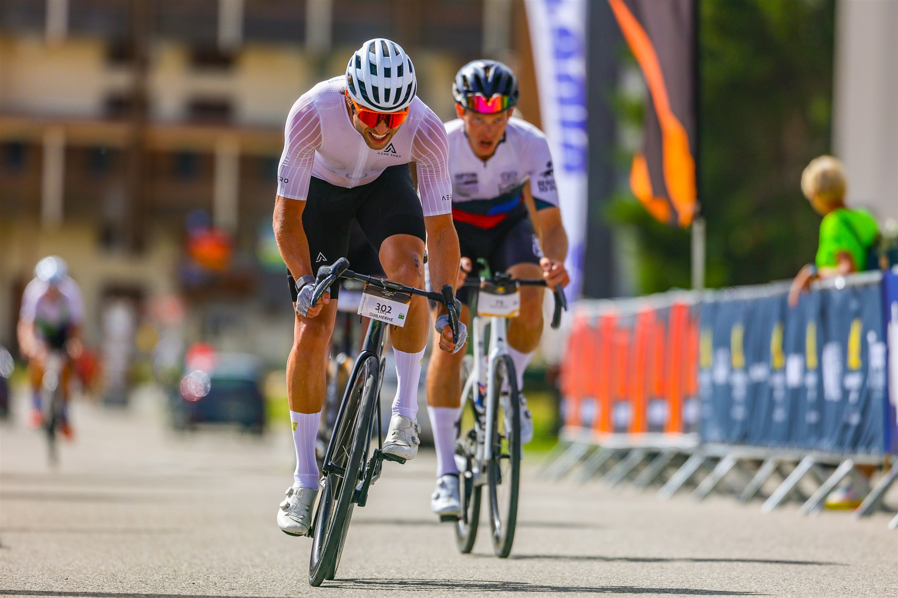
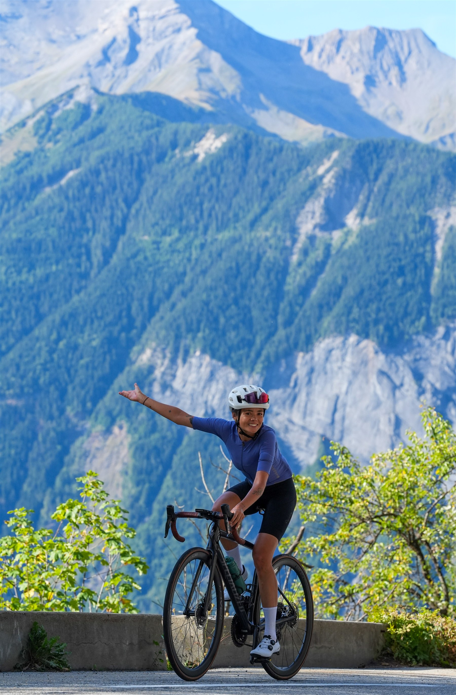

Fabio Lanzone and Annalisa Prato won the men’s and women’s general classifications at Haute Route Alps 2026 after seven stages from Nice to Thonon-les-Bains between 23 and 29 August.
The official route covered 808 kilometres and 19,255 metres of climbing. The race opened in the Alpes-Maritimes with a 182 km stage from Nice to Cuneo, crossing La Colmiane and the Col de la Lombarde while accumulating 4,020 metres of ascent.

Seven stages across the Alps
Stage two continued from Cuneo to the Col d’Izoard over 141 km and 3,610 metres of climbing, including the Col d’Agnel. The third stage linked Briançon and Alpe d’Huez over 81 km, taking riders across the Col du Lautaret and Col de Sarenne.

A 16 km individual time trial up Alpe d’Huez formed stage four. The following stages carried the field through the Col du Glandon, Bisanne, Les Saisies, the Col des Aravis and the Col de la Colombière before the final 119 km route from Megève to Thonon-les-Bains via the Col de Joux-Plane.
Lanzone and Prato complete a winning week
Official Haute Route race updates confirmed Lanzone as the men’s overall winner and Prato as the women’s champion after the final stage. Pavel Kochetkov won stage seven, completing the week with a victory on the road to Thonon-les-Bains.

The four correspondents documented different sections of a route that moved between the French and Italian Alps, recording the long mountain ascents, the timed effort on Alpe d’Huez and the atmosphere among riders across the week.
Correspondent coverage
Reporting: IM News Editorial Desk
Correspondents and photographers: Eduardo Castro, Luis Moreira, Michael Rosa and Paulo Nomade
Race information checked against the official Haute Route route and race updates.